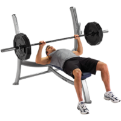
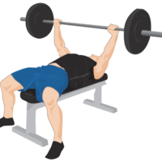
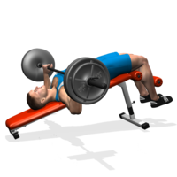
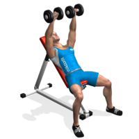
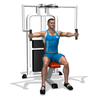

Bench Press
1.Lie on your back with your feet flat on the floor. If your feet don’t reach the floor, use a stable board to accommodate size. Grasp the barbell with a wider than shoulder-width grip, wrapping thumbs around the bar. Hold the barbell at arm’s length above your upper-chest area.
2.Slowly lower the barbell to the middle of your chest. In the bottom position the forearms should be perpendicular to the floor. Pause briefly, then press the barbell to the starting position. During the movement, the upper arms should be about 45 to 60 degrees from the torso and the hips should remain on the bench.

Incline BenchPress
1.Load the bar to an appropriate weight for your training,lay on the bench with your feet flat on the ground, driving through to your hips. Your back should be arched, and your shoulder blades retracted..
2.Take a medium, pronated grip covering the rings on the bar. Remove the bar from the rack, holding the weight above your chest with your arms extended. This will be your starting position,then Lower the bar to the sternum by flexing the elbows. Maintain control and do not bounce the bar off of your chest. Your lats should stay tight and elbows slightly drawn in,after touching your torso with the bar, extend the elbows to return the bar to the starting position.

Decline Bench Press
1.Secure your legs at the end of the decline bench and slowly lay down on the bench,using a medium width grip ,lift the bar from the rack and hold it straight over you with your arms locked,the arms should be perpendicular to the floor,this will be your starting position,as you breathe in, come down slowly until you feel the bar on your lower chest.
2.After a second pause, bring the bar back to the starting position as you breathe out and push the bar using your chest muscles. Lock your arms and squeeze your chest in the contracted position, hold for a second and then start coming down slowly again,repeat the movement for the prescribed amount of repetitions,when you are done, place the bar back in the rack.

Dumbell Press
1.Lie down on a flat bench with a dumbbell in each hand resting on top of your thighs,the palms of your hands will be facing each other,then using your thighs to help raise the dumbbells up, lift the dumbbells one at a time so that you can hold them in front of you at shoulder width,once at shoulder width, rotate your wrists forward so that the palms of your hands are facing away from you.
2.With your upper arm and forearm creating a 90 degree angle, be sure to maintain full control of the dumbbells at all times,this will be your starting position.then as you breathe out, use your chest to push the dumbbells up,lock your arms at the top of the lift and squeeze your chest, hold for a second and then begin coming down slowly,repeat the movement for the prescribed amount of repetitions of your training program.

Butterfly
1.Sit on the machine with your back flat on the pad,take hold of the handles,your upper arms should be positioned parallel to the floor,adjust the machine accordingly.
2.Push the handles together slowly as you squeeze your chest in the middle,breathe out during this part of the motion and hold the contraction for a second,return back to the starting position slowly as you inhale until your chest muscles are fully stretched,repeat for the recommended amount of repetitions.